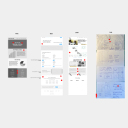
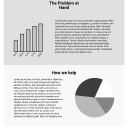
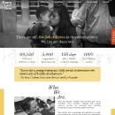

-

Low Fidelity Wireframes
For our new designs, we wanted to update the navigation and make the hero
image more modern and impactful. We also wanted to update the content chucking
to make information easier to read and digestible.
-

Mid Fidelity Wireframes
After consolidating our ideas and sketches we decided the new website
needed more visuals such as pictures and infographics to convey digestible information.
-

High Fidelity Designs
After conducting some usability tests we found that our original
prototype still seemed dense with text. So we added more visuals and
integrated typography to show data and statistics.